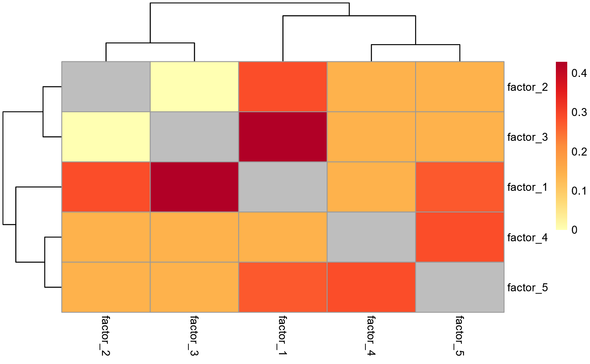

Heatmap comparing commonality across factors
Usage
plot_common_features(
common_features,
filename = NA,
color = (grDevices::colorRampPalette(RColorBrewer::brewer.pal(n = 7, name =
"YlOrRd")))(100)
)Arguments
- common_features
The output of get_common_features.
- filename
The path at which to save the plot.
- color
The colour palette to be used in the heatmap.
Value
An object generated by pheatmap.
Examples
# Get a random matrix with rnorm, with 100 rows (features)
# and 20 columns (observations)
X <- ReducedExperiment:::.makeRandomData(100, 20, "feature", "obs")
# Estimate 5 factors based on the data matrix
fe <- estimate_factors(X, nc = 5)
# Get the genes highly aligned with each factor
aligned_features <- getAlignedFeatures(
fe,
format = "data.frame",
proportional_threshold = 0.3
)
# Identify overlap between common features for each factor
common_features <- get_common_features(aligned_features)
# Plot the common features as a heatmap
plot_common_features(common_features)
